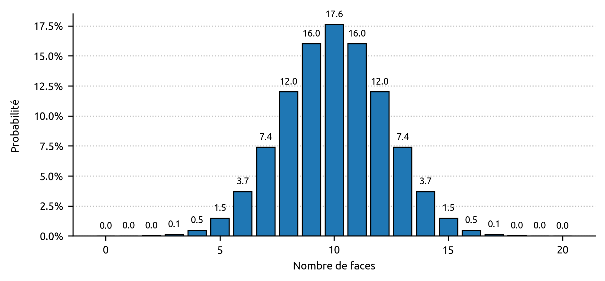
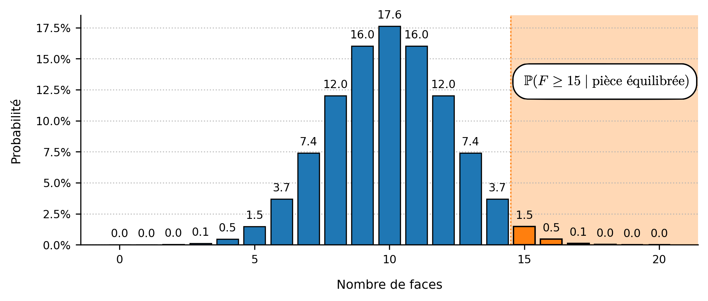

Bienvenue ! Si les exemples concrets vous parlent plus que les grandes théories, alors vous êtes au bon endroit. Maintenant que nous avons vu que la p-value n’est finalement rien d’autre qu’une probabilité qui dépend d'une hypothèse, regardons un exemple concret pour que ces notions prennent définitivement vie. Pour rappel, lorsqu'on observe le résultat d'une expérience ($X_{observé}$) sachant notre hypothèse nulle $H_0$, la p-value est la probabilité d'obtenir un résultat au moins aussi extrême que celui observé, dans le monde où $H_0$ — notre croyance — est vraie. $$\text{p-value}:= \mathbb{P}(X \geq X_{observé} \mid H_0 \text{ vraie})$$
La p-value permet alors de décider si le résultat observé est ordinaire — conforme à nos croyances, à notre hypothèse — ou s'il doit être considéré comme étant extraordinaire. Et c'est l'hypothèse nulle $H_0$ qui définit justement ce qu'est l'ordinaire, c'est le monde « par défaut ». Le seuil de 0.05 (5%) permet de décider si un résultat est ordinaire ou extraordinaire et de passer le cas échéant du monde de $H_0$ à celui de $H_1$. Classiquement, on considère qu'un résultat qui avait moins de 5% de chances de se produire dans le monde où $H_0$ est vraie (p-value < 0.05) est extraordinaire, et constitue un niveau de preuve suffisant pour basculer vers $H_1$ : nous devons rejetter le monde dans lequel $H_0$ est vraie et basculer dans $H_1$. En effet, si nous étions vraiment dans le monde de $H_0$, ce résultat était trop improbable pour être observé. À l'inverse, un résultat qui avait plus de 5% de chances de se produire dans le monde où $H_0$ est vraie (p-value ≥ 0.05) est ordinaire, et ne constitue pas un niveau de preuve suffisant pour basculer vers $H_1$ : nous ne pouvons pas rejetter le monde dans lequel $H_0$ est vraie et basculer dans $H_1$. En effet, si nous étions vraiment dans le monde de $H_0$, ce résultat était probable, possible. Cela ne signifie pas que $H_0$ est vraie ou que $H_1$ est fausse, mais simplement que nous n'avons pas accumulé assez de preuves pour changer de monde.
Une histoire de pièce
Franck a reçu une pièce de monnaie et cherche à savoir si celle-ci est équilibrée ou non. Lorsqu'on lance une pièce équilibrée, il y a 50% de chances qu'elle retombe sur pile et 50% de chances qu'elle retombe sur face (on omet la tranche). Si la pièce est truquée — non équilibrée — les probabilités ne sont pas de 50-50. Par exemple, une pièce truquée pourrait avoir 70% de chances de tomber sur face et 30% de chances de tomber sur pile. Dans cette expérience, Franck cherche à savoir si la pièce est est biaisée vers le côté face, c'est-à-dire qu'elle aurait plus de chances de tomber sur face que sur pile.
Dans cet exemple, le monde $H_1$ de Franck est celui où la pièce est truquée en faveur du côté face. Et le monde par défaut, $H_0$, c'est celui où la pièce est équilibrée. En fait, comme $H_0$ doit être le strict contraire de $H_1$, c'est le monde dans lequel la pièce est soit équilibrée, soit truquée du côté pile. Par soucis de simplification, on suppose que $H_0$ est le monde dans lequel la pièce est équilibrée. Même si Franck cherche à savoir si le monde où $H_1$ est vraie existe (la pièce est truquée), il doit d'abord se placer dans le monde où $H_0$ est vraie et faire comme si sa pièce était parfaitement équilibrée. Si, et seulement si, il accumule suffisamment de preuves pour remettre en question $H_0$ (p < 0.05), alors il pourra basculer vers $H_1$ et croire que sa pièce est truquée en faveur du côté face. S'il n'accumule pas assez de preuves (p ≥ 0.05), il ne pourra pas basculer vers $H_1$ et se verra contraint de rester dans le monde de $H_0$. Cela ne signifie pas que sa pièce est équilibrée, mais seulement qu'il n'a pas accumulé assez de preuves pour montrer qu'elle était truquée, si elle l'était vraiment.
Pour tester si sa pièce est truquée ou non, Franck décide de la lancer 20 fois. Soit alors $F$ la variable aléatoire discrète qui compte le nombre de faces obtenues sur les 20 lancers. L'hypothèse nulle $H_0$ étant « la pièce est équilibrée » et l'hypothèse alternative $H_1$ étant « la pièce est biaisée vers le côté face », on peut mathématiquement écrire : $$H_0 : \mathbb{P}(\text{face}) = \mathbb{P}(\text{pile})$$ $$H_1 : \mathbb{P}(\text{face}) \gt \mathbb{P}(\text{pile})$$
Franck fait l'expérience et tombe sur 15 faces ($F = 15$). Que peut-il en conclure ?
Déjà, un point crucial à bien garder en tête est le fait qu'il ne pourra jamais savoir avec certitude si sa pièce est truquée ou non. Peut-être que la pièce est équilibrée et qu'il n'a juste pas eu de chance, ou peut-être que la pièce est vraiment truquée et c'est donc normal d'obtenir 15 faces sur 20 lancers. Pire encore, ce raisonnement est valable pour n'importe quelle valeur de $F$ : si Franck avait obtenu 20 faces sur 20 lancers, peut-être est-il tout simplement extrêmement malchanceux (ou chanceux suivant le point de vue) ou peut-être que la pièce est réellement truquée et c'est donc normal d'obtenir ce résultat. Peu importe la décision qu'il prendra, un doute persistera toujours. Par contre, la théorie de la p-value lui permettra quand même de faire un choix éclairé sur ce qu'il devrait croire ou ne pas croire. Il pourra évaluer dans quel monde son résultat est le plus vraisemblable.
Et la p-value permet précisément de prendre une décision 'objective' de ce type de situation : Franck doit tout simplement se demander, dans le monde où $H_0$ est vraie (la pièce est équilibrée), quelle est la probabilité d'observer un résultat au moins aussi extrême que le sien ? Si la pièce est équilibrée, quelle est la probabilité d'obtenir au moins 15 faces sur 20 lancers ? Mathématiquement, cela revient à calculer : $$\mathbb{P}(F \geq 15 \mid H_0 \text{ vraie})$$
Si cette probabilité — qui n'est rien d'autre que ce que l'on appelle p-value — est supérieure ou égale à 5 % ( p ≥ 0.05) alors le résultat de Franck est ordinaire, assez probable pour qu'il ne remette pas en question sa croyance initiale $H_0$ : soit sa pièce est équilibrée, soit elle est truquée mais il n'a pas assez de preuves pour basculer vers $H_1$. Par contre, si cette probabilité est inférieure à 5 % (p < 0.05), le résultat devient extraordinaire dans le monde de $H_0$, et Franck a accumulé assez de preuves pour basculer vers $H_1$ : observer un tel résultat (ou un aussi extrême) si la pièce était vraiment équilibrée aurait été trop improbable — il est donc plus raisonnable de penser que c'est sa croyance initiale qui est fausse : sa pièce doit probablement être biaisée vers le côté face. Un résultat ordinaire dans $H_0$ ne permet pas de remettre en question la véracité de ce monde, un résultat extraordinaire le permet. Le raisonnement est aussi simple que cela.
La première chose à faire pour Franck est de caractériser l'ordinaire, le monde de $H_0$ : lorsqu'on lance une pièce équilibrée 20 fois, à quoi devrait-on attendre ? On pourrait se dire qu'on devrait obtenir 10 faces et 10 piles. C'est effectivement le résultat le plus probable mais qui arrive dans seulement 17,6% des cas. Obtenir 11 faces et 9 piles est un peu moins probable et arrive dans 16% des cas, comme obtenir 9 faces et 11 piles. Ainsi, lorsqu'on lance une pièce équilibrée 20 fois, nous avons presque deux fois plus de chances de faire 11 piles et 9 faces (16%) ou 9 piles et 11 faces (16%) que 10 piles et 10 faces (17,6%). La distribution de probabilité de la variable aléatoire $F$ comptabilisant le nombre de faces que l'on peut espérer obtenir lorsqu'on lance 20 fois une pièce équilibrée est représentée sur la Figure 1.

Sur la Figure 1, on peut visualiser les probabilités décrites précedemment. Les résultats sont arrondis à un nombre après la virgule, de telle sorte que les probabilités d'obtenir 18, 19 ou 20 faces sur 20 lancers sont respectivement de 0,018, 0,002 et 0,0001. Si vous lancez une pièce parfaitement équilibrée 20 fois, vous avez ainsi 1 chance sur 10 000 qu'elle retombe sur face les 20 fois. Si cela se produisait, ce serait vraiment extraordinaire.
Pour calculer la p-value, il suffit donc de calculer la probabilité d'obtenir un résultat au moins aussi extrême que celui observé sachant $H_0$ vraie, à savoir : $\mathbb{P}(F \geq 15 \mid \text{pièce équilibrée})$. Comme la variable aléatoire $F$ est discrère, on peut simplement additionner les probabilités de telle sorte qu'obtenir au moins 15 faces est équivalent à obtenir 15 faces, ou 16 faces, ou 17 faces, ou 18 faces, ou 19 faces, ou 20 faces : $$ \begin{alignedat}{3} \text{p-value} &\;:&= &\; \mathbb{P}(F=15 \mid \text{pièce équilibrée}) \\ & & + &\; \mathbb{P}(F=16 \mid \text{pièce équilibrée}) \\ & & + &\; \mathbb{P}(F=17 \mid \text{pièce équilibrée}) \\ & & + &\; \mathbb{P}(F=18 \mid \text{pièce équilibrée}) \\ & & + &\; \mathbb{P}(F=19 \mid \text{pièce équilibrée}) \\ & & + &\; \mathbb{P}(F=20 \mid \text{pièce équilibrée}) \end{alignedat} $$
Juste pour la beauté des maths, cette formule peut s'écrire : $$ \text{p-value} \coloneqq \sum_{i=15}^{20} \mathbb{P}(F = i \mid \text{pièce équilibrée}) $$
La Figure 2 représente cette quantité et ce qu'est visuellement la p-value.

À l'aide de la Figure 2 et d'un calcul rapide, on peut conclure : $$\mathbb{P}(F \geq 15 \mid \text{pièce équilibrée}) = 1,5\% + 0,5\% + 0,1\% + 0,018\% + 0,002\% + 0,0001\% = 2,1\%$$
Ainsi, dans le monde de $H_0$ où la pièce de Franck est équilibrée, la probabilité d'obtenir au moins 15 faces sur 20 lancers n'est que de 2,1%. La p-value s'exprime rarement en pourcentage de telle sorte qu'on écrira plûtot : p-value = 0.021. Dans les résultats scientifiques officiels, la p-value est souvent abrégée en p. On pourra alors simplement écrire p = 0.021.
Étant donné que 0.021 < 0.05 (2.1% < 5%), Franck dispose d'une preuve suffisante pour pouvoir basculer vers $H_1$. Sa conclusion est la suivante : « Si ma pièce était vraiment équilibrée, la probabilité que j'obtienne ce résultat ou un résultat encore plus extrême n'était que de 2.1%. Ainsi, si ma pièce était vraiment équilibrée, ce résultat serait vraiment extraordinaire. Comme mon résultat est trop improbable dans le monde où $H_0$ est vraie, dans le monde où ma pièce est équilibrée, il ne serait pas raisonnable de l'attribuer au hasard. Le monde où $H_0$ est vraie, celui où ma pièce est équilibrée, ne colle tout simplement pas avec ce que j'observe. Je dois rejetter mon hypothèse nulle et basculer vers $H_1$ : ma pièce est truquée. »
Si la pièce est vraiment truquée, Franck a pris la bonne décision. Par contre, dans un monde où $H_0$ est vraiment vraie (la pièce est équilibrée) et où Franck obtient ce même résultat — ce qui arrive dans 2.1% des cas — alors sa conclusion sera la même, son raisonnement sera juste, mais il se trompera.
À vous de jouer
Dans cette section intéractive, je vous propose de tester par vous même à partir de quel moment peut-on considérer qu'une pièce est truquée vers le côté face. En considérant un certain nombre de lancers ainsi que le nombre de fois où la pièce est tombée sur face (noté $k$), vous pouvez calculer les probabilités que la variable aléatoire $F$ soit égale à une certaine valeur $k$, ou supérieure ou égale à cette valeur, toujours en étant dans le monde de $H_0$, c'est-à-dire en considérant « naïvement » que la pièce est équilibrée. Pour rappel, la p-value est : $\mathbb{P}(F \geq k \mid H_0 \text{ vraie})$